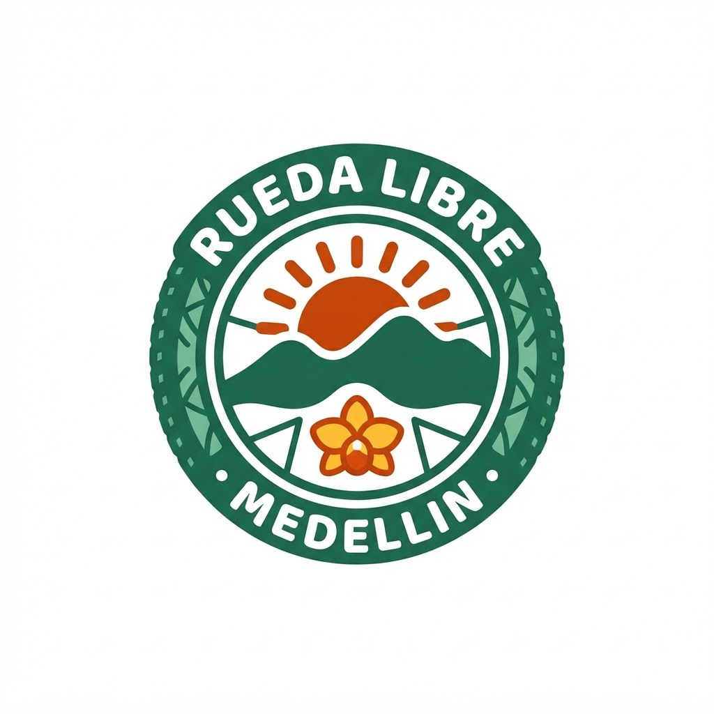
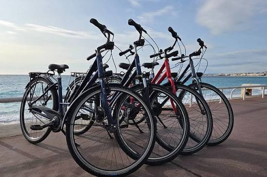

Somos Rueda Libre, un negocio de alquiler de bicicletas en Medellín. Queremos que conozcas la ciudad a tu propio ritmo, sin afanes y con todo el apoyo que necesites. Si quieres saber dónde estamos, visita la sección Encuéntranos.

Tenemos bicicletas para distintos niveles y tamaños. El alquiler incluye casco y candado y puedes reservar por horas o por días.

Un guía local te acompaña por las rutas más bonitas de la ciudad. Los recorridos son para todos los niveles y tienen paradas para tomar fotos y descansar.
Si tu bicicleta necesita ayuda, ofrecemos ajustes y reparaciones rápidas: frenos, cambios, inflado y cambio de llantas. Es un servicio sencillo y económico para que sigas rodando.
Estamos en Medellín, Antioquia. Ver la ubicación en el mapa.
¿Dudas o reservas? Escríbenos a hola@ruedalibre.example.